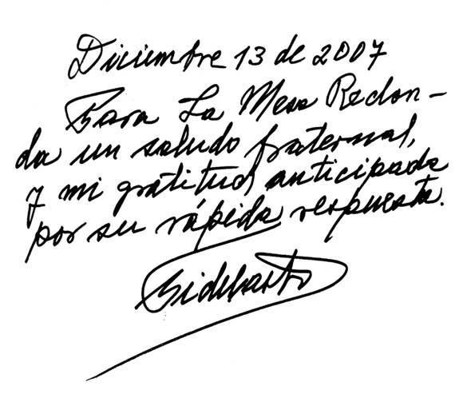

Carta del Comandante en Jefe Fidel Castro
Ruz a la Mesa Redonda
La
Habana, 12 de diciembre de 2007
Querido
Randy:
Me
emocioné mucho con el extraordinario documental de la realizadora argentina Carolina
Silvestre, en el que desmonta una por una las mentiras de la democracia y los
derechos humanos del capitalismo desarrollado y globalizado.
Desde
hace días, a partir del referendo venezolano del 2 de diciembre, trataba de
recordar, entre los cientos de pronunciamientos emanados de mi tarea
revolucionaria, uno de ellos en el que definía concretamente nuestra posición
sobre los compromisos internacionales de Cuba.
Pedí
copia de varios materiales en los que abordaba el tema. Quiso el azar que uno
de los más precisos fuera en la Mesa Redonda. Es bastante reciente, tiene sólo
un poco menos de siete años.
Estamos
envueltos en un proceso electoral. Considero las ideas el punto de partida de
mi vida política. A este material, que te envío textualmente, lo titularía hoy
con su línea final: "La historia dirá quién tiene la razón."
Te
ruego lo transmitas, de ser posible, mañana jueves.
Lo
motivó unas palabras del entonces primer ministro de Canadá, jean Chrétien, en
la III Cumbre de las Américas.
Mi
declaración en aquel momento podía parecer intrascendente.

Respuesta del Comandante en Jefe Fidel
Castro Ruz en la Mesa Redonda Informativa del 25 de abril del 2001 a las
declaraciones realizadas por el primer ministro de Canadá, Jean Chrétien,
durante la III Cumbre de las Américas.
Cmdte.- Muy bien, ya, ahora paciencia. Tal vez este material sea de
interés, si es que tú me das la palabra.
Me parecía que valía la pena dedicar unos minutos a eso.
¿Vas a hablar de la sede?
Randy Alonso.- De la sede de la III Cumbre y las declaraciones que hizo
su Primer Ministro... Hubo varias declaraciones del Primer Ministro, hubo
declaraciones del Canciller también.
Cmdte.- Sí, yo escogí una, porque al que más conozco es al Primer
Ministro y es con el que más amistad tengo.
Bueno, para que el pueblo comprenda de qué se trata:
“Québec (Canadá), 19 de abril (EFE).-
El primer ministro canadiense, Jean Chrétien, justificó hoy la exclusión
de Cuba de la III Cumbre de las Américas por la falta de gestos del régimen
cubano en temas de derechos humanos a pesar de ‘pasar horas tratando de
convencer’ a Fidel Castro para que cambiase de política.
“A su llegada al centro de convenciones de Québec donde se celebrará la
Cumbre este fin de semana, Chrétien fue preguntado si había variado su posición
sobre la inclusión de Cuba en el proceso de las Cumbres de las Américas, ya que
en las anteriores reuniones en Miami y
Santiago había solicitado la presencia del régimen de Castro.
“‘No he
cambiado de opinión’, respondió Chrétien.
“El Primer
Ministro canadiense se mostró seco cuando se le cuestionó si Cuba no estaba
presente en Québec por la negativa de Washington.
“Asimismo,
cuando se le presionó para que indicase qué otro país del continente se había
opuesto a la participación de Castro en la III Cumbre de las Américas, Chrétien
respondió al periodista con ‘pregúnteles a ellos’.
“El Primer
Ministro canadiense añadió que había pasado ‘horas y horas tratando de
persuadir a Castro’ para que firmase algunas convenciones sobre derechos
humanos, pero que no obtuvo ningún gesto del régimen de La Habana’.
“‘Pasé horas
con él (Fidel Castro) intentando que firmase algunas resoluciones de las
Naciones Unidas’, insistió Chrétien.”
He meditado
mucho sobre este pronunciamiento del señor Chrétien. No tenía necesidad alguna de emitir una
valoración pública precipitada e improvisada de aquel encuentro.
He trabajado
buscando datos y reconstruyendo con la mayor objetividad posible lo que allí
conversamos y la atmósfera en que se llevaron a cabo nuestros intercambios.
Traigo aquí una
reflexión escrita, dada la necesidad de precisión por la delicadeza de los
temas.
Apenas comenzamos
la reunión, de forma casi abrupta, puso sobre la mesa una pequeña lista de
nombres evidentemente recién recibida por él.
Casi adiviné de qué se trataba.
Era lo habitual cada vez que nos visitaba una personalidad política de
algún país aliado de Estados Unidos o algún político norteamericano: el Departamento de Estado le entregaba una
lista de personas procesadas o sancionadas por actividades
contrarrevolucionarias. Las listas siempre iban encabezadas por aquellas que
eran de mayor importancia e interés para los servicios de inteligencia o el
gobierno de Estados Unidos. Pedía el
indulto o la puesta en libertad de los mismos.
Era una táctica invariable del gobierno de Estados Unidos para presionar
en favor de sus amigos, aprovechando cualquier visita amistosa a Cuba. Como en nuestro país suele ejercerse la mayor
tolerancia posible, sólo en casos excepcionales las autoridades proceden al
arresto y procesamiento de los implicados cuando sus acciones provocadoras son
graves y totalmente inadmisibles.
El Primer Ministro
canadiense me recuerda que, con motivo de la visita del Papa, un número de
sancionados por causas contrarrevolucionarias habían sido indultados y él se
había comprometido a solicitar lo mismo para los incluidos en la lista.
Realmente
el Papa nunca abordó este tema en la conversación conmigo, y lo había hecho a
través de su Secretario de Estado en otra reunión con el Ministro de Relaciones
Exteriores.
Sin
esperar respuesta, plantea de inmediato que Cuba suscriba el Convenio de
Naciones Unidas sobre los Derechos Económicos, Sociales y Culturales, ya que
Cuba en esa materia había hecho igual o más que cualquier otro país del
mundo. Era sin duda una frase halagüeña
y una forma más habilidosa y oportuna de plantear algo.
Recuerdo que, acto
seguido, menciona el acuerdo de libre comercio entre Canadá, México y Estados
Unidos, y los proyectos de hacerlo con el resto de América Latina, expresando
su criterio de que Cuba podía hacer una importante contribución.
Y por
último se refiere al tratado contra las minas antipersonales, lamentándose de
que Cuba no lo había firmado y solicitando que lo suscribiera. Eran estos los cuatro puntos con los que
inició sus conversaciones. Todos
parecían muy sencillos; los cuatro, sin
embargo, eran sumamente complicados.
Le
pregunté si era habitual en los políticos canadienses comenzar por lo más
difícil, y le añadí en tono de broma que si no salíamos bien de estas pruebas,
habríamos de echar a perder la visita.
Me
parece recordar que la reunión duró alrededor de dos horas, en tono cordial y
respetuoso pero franco. Debo confesar
que usé la mayor parte del tiempo porque era necesario argumentar con
determinada profundidad la razón de nuestras posiciones, en especial sobre tres
de los puntos.
Imposible
repetir aquí cada uno de esos argumentos.
Sólo una brevísima síntesis, con las respuestas esenciales.
Le
dije que yo no debía decidir personalmente y de inmediato, o comprometerme
sobre algunas de las cuestiones, ni tampoco crear falsas esperanzas sobre las
decisiones que adoptaríamos. Que la muy
publicitada cuestión de supuestos presos de conciencia era una vieja historia
después de casi 40 años de todo tipo de fechorías y crímenes por parte del
gobierno de Estados Unidos contra Cuba.
Los enumeré con amplitud y detalles, contrastándolos con la intachable
conducta y la ética de nuestra Revolución pese al diluvio de infamias y
calumnias vertidas contra Cuba. La
hipocresía y doble moral de la política seguida contra ella. Las circunstancias que nos habían obligado a
tener personas en prisión. Que sólo en
Girón habíamos hecho prisioneros a 1.200 invasores, y que la propia Revolución
desde los primeros años había ido poniendo en libertad a los que, sirviendo los
intereses de una potencia extranjera a lo largo de cuatro décadas, habían
tratado de destruirla. Que ahora el tema
de los que por esa causa estaban en prisión era constantemente utilizado para
presionar a Cuba, el país que sufría la hostilidad y la agresión exterior. Las graves amenazas que todavía afrontábamos,
como los actos terroristas organizados y pagados desde Estados Unidos.
En un momento me dijo que su deseo era superar
esa situación para que regresáramos a la gran familia. Le dije que nosotros éramos latinoamericanos,
y le pregunté si se trataba de que regresáramos a la gran familia o que la gran
familia regresara a nosotros. Terminé el
punto respondiéndole que él había traído una lista de personas que eran
mercenarios al servicio de Estados Unidos y pagados por Estados Unidos, y que
en complicidad con Estados Unidos trataban de destruir la Revolución. Que como amigo le debía decir que esa lista
era humillante para Cuba. Se esmeró en
explicar que esa no era su intención, y que quizás había presentado la lista
demasiado temprano.
No
todo fue dramático. Hubo bromas e
incluso chistes intercalados. Esta
parte, referida con cierta extensión, puede dar una idea de la intensidad de la
primera hora de conversación.
Con
relación a su énfasis en la familia hemisférica, le expresé que me alegraba
mucho, pero que yo pensaba también en la familia universal: Europa, Asia y África.
Con
relación al punto dos, el Convenio de Naciones Unidas sobre los Derechos
Económicos, Sociales y Culturales, no vacilé en decirle que nosotros podíamos
suscribir todos los artículos excepto dos, el 8 y el 13. Que el primero podría estar muy bien para un
país capitalista como Canadá, Estados Unidos y los de América Latina, porque en
unos gobernaban los empresarios o los oligarcas y en otros las grandes
transnacionales. Allí dividían,
fraccionaban y, cuando era posible, corrompían y enajenaban a los trabajadores,
que muy poco podían hacer frente al poder político de los patronos. Se trataba de sistemas económicos diferentes
al nuestro.
Con
relación a ese artículo del Convenio, donde se habla de que cada persona tiene
el derecho a fundar sindicatos y afiliarse a los de su elección, con sujeción
únicamente a los estatutos de la organización correspondiente, para promover y
proteger sus intereses económicos y sociales, en un país socialista como Cuba,
donde los trabajadores manuales e intelectuales están todos organizados en sus
respectivos sindicatos y sólidamente unidos como clase revolucionaria que
comparte el poder con el resto del pueblo, los campesinos, las mujeres, los
estudiantes, los vecinos y la ciudadanía en general, tal precepto serviría de
arma y de pretexto al imperialismo para tratar de dividir y fragmentar a los
trabajadores, crear sindicatos artificiales, y reducir su fuerza e influencia
política y social. En Estados Unidos y
en muchos países de Europa y otras regiones, la estrategia del imperialismo es
dividir, debilitar y corromper al movimiento sindical hasta situarlo en
condiciones de indefensión total frente a los patronos. En Cuba el propósito sería fundamentalmente
subversivo y desestabilizador, socavar el poder político, mermar la
extraordinaria fuerza e influencia de nuestros trabajadores, y erosionar la
heroica resistencia del único Estado socialista de Occidente frente a la
superpotencia hegemónica.
El
otro precepto tampoco podría suscribirse porque abriría las puertas a la
privatización de la enseñanza, que en el pasado dio lugar a dolorosas
diferencias e irritantes privilegios e injusticias, incluida la discriminación
racial que nuestros niños no volverán a conocer jamás. Un país que logró erradicar en sólo un año el
analfabetismo, alcanzó niveles de nueve grados como promedio, y cuenta con un
extraordinario y masivo contingente de profesores y maestros y el más sano y
exitoso sistema de educación del mundo, no necesita comprometerse con tal
precepto.
A
Chrétien le dije que América Latina llevaba casi 200 años tratando de acabar
con el analfabetismo y todavía no lo ha hecho.
Chrétien
propuso que firmáramos el Convenio e hiciéramos la reserva con relación a los
dos artículos. Le respondimos que
después se habla de incumplimientos del Convenio y nadie sabe o se acuerda de
las reservas con que se suscribió. ¡Con
eso no se podía jugar!
Con
relación al tratado sobre las minas no hablamos mucho en esa reunión. Le adelanté que no íbamos a firmarlo. Que teníamos incluso una base militar de Estados
Unidos en nuestro propio territorio. Que
entre el límite de la misma y el resto de nuestro territorio, era el único
punto donde estaban instaladas. Que las
minas constituían para nosotros un arma defensiva a la que no cometeríamos el
error de renunciar; que no poseíamos
armas nucleares, bombas o misiles inteligentes, ni otros muchos sofisticados
medios que posee Estados Unidos. Que
sobre nuestro país se cernía una amenaza real, y por esa razón no pensábamos
firmarlo.
Más
tarde abordó de nuevo el tema desde un ángulo que yo no habría podido sospechar
en ese instante. Al concluir este primer
encuentro me afirmó, con evidente satisfacción y sinceridad, que había sido una
discusión excelente. La síntesis de lo
esencial de lo abordado en nuestra primera reunión puede dar la impresión de
que fue áspera. Nada más lejos de la
realidad. En todo momento reinó una
atmósfera cálida y amistosa.
Me pareció percibir
con claridad —aunque no lo dijo, pero sí
del conjunto de lo que dijo el señor Chrétien— que ante la presencia de un
vecino tan poderoso con el cual comparte 8.644 kilómetros de frontera,
experimentaba temor por el futuro de su país.
Consciente de las dos fuertes culturas y tradiciones diferentes bien arraigadas,
le inquieta el riesgo que para la unidad del Estado significa que cualquier
ambición, un error, o una simple sacudida del vecino, deshaga el país. Para ese enorme y rico territorio, poblado
por sólo 32 millones de habitantes, donde entre otros recursos —como me dijo el
propio Chrétien— se encuentra la cuarta parte de las reservas de agua potable
del mundo, quizás aún más que para la propia Cuba, Estados Unidos constituye un
gran dolor de cabeza.
En lo que tal vez
fue el momento más interesante de la conversación, y en el que Chrétien expuso
su idea más inteligente, capaz de provocar hasta en un interlocutor bastante
distante de su ideología un sentimiento de solidaridad, fue cuando contó que él
se había opuesto a la idea de un acuerdo de libre comercio únicamente con
Estados Unidos. Había que buscar por lo
menos un tercero, y apareció México, con el cual en muchas ocasiones compartía
posiciones frente a los manejos de Estados Unidos. Que en el 2005 serían 34, y ojalá 35
(evidente alusión a Cuba), para balancear con los Estados Unidos.
En una ocasión me
dijo que Canadá era un país muy celoso de su independencia con relación a
Estados Unidos, que era de gran importancia mantener su independencia de
Estados Unidos, y que su política era mantener relaciones estrechas y amistosas
con ese país, pero muy independientes.
Me afirmó orgulloso que ya Canadá competía con el valle de Silicona de
California, donde se produce toda la alta tecnología.
La segunda reunión
con Chrétien y su delegación tiene lugar por la noche. Hubo cena y un más amplio intercambio. En determinada ocasión, al mencionar el plan
de atentado contra mí en la Isla de Margarita, organizado por la famosa
Fundación, me señaló que a menudo esta era la causa de grandes dificultades,
porque cuando ocurrió el incidente de los aviones fue para crear ese problema
al gobierno de Estados Unidos que estaba listo para dar un paso positivo con
relación a Cuba. Le hablé de la Ley de
Ajuste Cubano, sus absurdas e
irracionales consecuencias.
Hablamos también de
la Ley Helms-Burton. Me dijo que con
relación a esa ley Estados Unidos se encontraba aislado. Que él personalmente fue el primero en hacer
una declaración cuando se aprobó. Que
estando reunido con los Primeros Ministros del Caribe, juntos hicieron la
primera declaración contra la Helms-Burton.
En relación con el
incidente de los aviones en el año 1996, utilizado como pretexto para aprobar
la Ley Helms-Burton, le dije que en The
New Yorker del 26 de enero de 1998 estaba la historia casi completa del
incidente.
Al preguntarme
por el ALCA, le dije que había que tener paciencia, saber qué iba a pasar en
América Latina con ese acuerdo de libre comercio, cuáles serían las
consecuencias no sólo para nuestros países sino también para el resto del
mundo, así como las artimañas para imponer un acuerdo multilateral de
inversiones, cuestiones que nos preocupaban mucho. Que era necesario estudiar a fondo esas
cuestiones. Le hablé sobre aspectos
concretos de nuestra economía, medidas adoptadas para enfrentar el período
especial; la imposibilidad de prescindir
de los aranceles para muchos países de América Latina y el Caribe, algunos de
los cuales recibían por esa vía hasta el 80 por ciento de los ingresos
presupuestarios. Al preguntarle si a
Canadá le perjudicaba de alguna forma la integración de Europa y el surgimiento
del euro, me respondió que no, que el 82 por ciento de su comercio era con
Estados Unidos. Tenemos mil millones de
dólares diarios de comercio con Estados Unidos, nos dijo.
Por mi parte
le dije francamente mi opinión de que a los países de América Latina les
convendría el éxito de la integración Europea y que Europa compita con los
Estados Unidos por los mercados e inversiones en América Latina. Es mejor que haya dos, tres, cuatro potencias
económicas fuertes para que la economía mundial no dependa sólo de un poderoso
país y de una sola moneda.
Conversamos
incluso sobre la tecnología canadiense en materia de energía nuclear y la
posibilidad de que en el futuro nuestro país pudiera adquirir reactores
canadienses, aunque por el momento no era para nosotros la mejor opción ni la
más económica para el rápido crecimiento de la generación eléctrica que
necesitamos con cierta urgencia.
Le hablé
también de los mexicanos que estaban muriendo en la frontera con Estados
Unidos, donde ya morían cada año muchos más que los que murieron durante casi
30 años de existencia del Muro de Berlín.
Pocos temas importantes estuvieron ausentes de
nuestro intercambio.
En la atmósfera propicia que se había creado y tomando
en cuenta la participación de Canadá en los acontecimientos políticos de Haití,
ya en proceso de normalización, y su presencia en ese país, le dije que Haití
era un vecino cercano y uno de los países más pobres del mundo, con índices
terribles de salud, incluido el SIDA, que amenazaban con una catástrofe humana,
y le pregunté por qué no dábamos un ejemplo de cooperación y elaborábamos un
programa de salud para Haití. Cuba
enviaría personal médico y Canadá suministraría los medicamentos y equipos
necesarios.
Me preguntó si lo había discutido con el Presidente de
Haití. Le respondí que no podía
ofrecérselo si no coordinaba primero con el gobierno canadiense, expresándole
mi convicción de que aceptarían.
Me habló de su interés especial por un país de lengua
francesa, pues una parte importante de la población de Canadá es de esa lengua,
y por tanto tenía interés en programas para Haití. Que analizaría la proposición. Le comuniqué
que hablaría con el gobierno haitiano.
Al parecer aquella idea le sugirió de inmediato
otra. Me dijo acto seguido que tenía una
propuesta que hacer sobre un programa conjunto: un programa conjunto con Angola
y Mozambique para eliminar las minas antipersonales. Ustedes pueden poner los trabajadores,
nosotros el dinero, añadió. Que esos
países ya habían firmado el convenio. Se
le indicó por nuestra parte que los que podían realizar ese trabajo eran
únicamente los militares. Respondió que
nosotros los cubanos teníamos el personal experto y ellos suministrarían el
dinero para el programa, pues ya tenían aprobado el presupuesto.
Que varios países habían comprometido fondos para la
limpieza de los campos minados, entre ellos Japón, Suecia, Noruega, Dinamarca y
otros, y como nosotros teníamos expertos pensaba que los cubanos podríamos
realizar ese trabajo.
Es incuestionable que no se dio cuenta de cuán
hiriente podía ser lo que estaba proponiendo. Una colaboración humanitaria en
la que Canadá y otros países ricos ponían el dinero y nosotros los riesgos de
mutilación y pérdidas de vidas de nuestros soldados. Tal vez no lo pensó nunca, o no estuviera
consciente de lo que nos estaba proponiendo, pero sentí la fuerte impresión de
que nos querían alquilar como mercenarios.
Experimenté por breves segundos una sensación de
ultraje, recordando el desinteresado espíritu de sacrificio, la historia limpia
y noble de un pueblo que se enfrentaba a una intensa guerra económica y al período especial dispuesto a morir por
sus ideas. ¿Pretendería alguien valerse
de esa situación para tentarnos con
misiones de ese tipo?
Tomando en cuenta las características de mi
interlocutor, y el tono amable, franco, confiado, e incluso el humor con que -recuerdo- se desarrollaron nuestros
intercambios, aún pienso que lo que dijo y la forma en que lo dijo no fue un
acto consciente de lo que objetivamente podía interpretarse de sus palabras.
Le expliqué que en Angola era todavía difícil desminar
porque estaban las bandas armadas por Estados Unidos y Suráfrica; que todas
esas minas habían sido entregadas por Estados Unidos y la Suráfrica del
Apartheid a Savimbi. Que eso podía
costar mutilaciones y pérdida de vidas.
¿Cómo justificar ante nuestro pueblo la participación cubana?
Con la mayor ecuanimidad le propuse lo que califiqué
de solución razonable: estábamos
dispuestos a entrenar todo el personal necesario de Angola, Mozambique o
cualquier otro país afectado por problemas de este tipo para realizar esa tarea
en sus propios territorios.
Este
tema ocupó casi el último tramo de la segunda conversación, aunque continuó
durante varios minutos en el mismo tono amistoso y amable.
El
desagradable punto había sido abordado por nuestra parte de forma serena y
razonable, escuchado y al parecer comprendido y aceptado por la delegación
canadiense.
Las
bases de dos programas importantes de cooperación con terceros países habían
sido acordadas en principio, sobre las cuales se continuaría trabajando.
Observé
bien el carácter y la personalidad del Primer Ministro canadiense. Es un hombre de agradable conversación, buen
humor, con el que se puede entablar un intercambio interesante sobre variados
temas. Se preocupa por determinados
problemas del mundo actual y se entusiasma con los proyectos de su preferencia,
conoce a muchas personalidades políticas, sabe usar su experiencia y disfruta
al contar anécdotas por lo general interesantes y oportunas. Me pareció sinceramente patriótico. Es muy leal a su país y siente orgullo por
él. Un creyente fanático del modo
capitalista de producción, cual si fuera una religión monoteísta, y de la
ingenua idea de que esa es la única solución para todos los países por igual,
en cualquier continente, época, clima o región del mundo. En esa filosofía se educó. No estoy seguro de que con ella pueda
comprender cabalmente las realidades del mundo de hoy.
Conocí
a Trudeau, un estadista excepcional, de gran modestia y humildad, pensamiento
profundo y hombre de paz; estoy seguro
de que comprendió bien al mundo y comprendió también a Cuba.
Hubo
después otras actividades. Asistí a una
recepción de Chrétien en el patio de la embajada de Canadá. Estaba alegre, conversador, de buen
ánimo. Pronto se reuniría con
Clinton. Lo acompañé hasta el
aeropuerto. Ya próximo a Boyeros le pedí
que transmitiera a Clinton un saludo y que no existían por nuestra parte
sentimientos de hostilidad hacia él.
Bien medidas las palabras. Más
que otra cosa, una cortesía con el visitante.
La pagué caro. Tiempo después
recibo de Chrétien una carta de puño y letra contándome que había transmitido a
Clinton mi deseo de mejores relaciones con él. No era exactamente eso lo que le dije. No es mi estilo; no se concilia con mi
actitud durante toda la vida. Podía
parecer un ridículo ruego al poderoso Presidente de Estados Unidos. Me puse a
escribir también a mano una carta a Chrétien exponiéndole que ese mensaje no
era mi mensaje. El asunto resultaba
embarazoso. No era fácil conciliar el
disgusto con los términos precisos con los cuales debía redactarla, y de cierta
forma la aclaración se convertía, a la vez, en una especie de crítica a nuestro
amigo. Casi pude lograrlo, pero
finalmente abandoné la idea, guardé incluso el proyecto de carta, que tal vez
sea posible encontrar en alguna vieja libreta de notas, y me olvidé del asunto
hasta hoy. Ni siquiera su delicado gesto
de escribirme de su puño y letra pude reciprocar. Posiblemente creyó que yo era un maleducado
incorregible.
Pasaron
los meses y no había noticia alguna del proyecto haitiano, que por nuestra
parte sólo esperaba una breve respuesta.
Vino el huracán Georges. Asoló a
Santo Domingo y golpeó a la vecina Haití, protegida sólo por las montañas
dominicanas de tres mil metros, próximas a la frontera de este país, que
actuaron como barreras rompevientos, y prosiguió después hacia Cuba.
Cuando
todavía soplaban las últimas ráfagas del Georges, al norte del occidente del
país, la noche lluviosa del 28 de septiembre, en un discurso que pronuncié en
la clausura del V Congreso de los Comités de Defensa de la Revolución, dije:
“Le
pregunto a la comunidad internacional:
¿Quieren ayudar a ese país, invadido e intervenido militarmente no hace
mucho tiempo? ¿Quieren salvar
vidas? ¿Quieren dar una prueba de
espíritu humanitario? Hablemos ahora del
espíritu humanitario y hablemos de los derechos del ser humano.
“
[...] Sabemos cómo se pueden salvar 25 mil vidas en Haití todos los
años. Se conoce que cada año mueren 135
niños de 0 a 5 años por cada 1.000 nacidos vivos.”
[...]
“Partiendo
de la premisa de que el gobierno y el pueblo de Haití aceptarían gustosos una
importante y vital ayuda en ese campo, proponemos que si un país como Canadá,
que tiene estrechas relaciones con Haití, o un país como Francia, que tiene
estrechas relaciones históricas y culturales con Haití, o los países de la
Unión Europea, que están integrándose y ya tienen el euro, o Japón,
suministrara los medicamentos, nosotros estamos dispuestos a enviar los médicos
para ese programa, todos los médicos que hagan falta, aunque haya que enviar
una graduación completa o el equivalente.”
[...]
“Haití
no necesita soldados, no necesita invasiones de soldados; lo que necesita Haití son invasiones de
médicos para comenzar, lo que necesita Haití, además, son invasiones de
millones de dólares para su desarrollo.”
Noviembre de
1998. Han transcurrido siete meses y no
hay noticias de Chrétien sobre los temas abordados. Visita a Cuba el Ministro de Salud de Canadá,
Alan Rock. Me reúno con él. Acababa de recibir en Canadá a la doctora Nkosazana
Dlamini-Zuma, Ministra de Salud de Suráfrica.
Venía sumamente impresionado por lo que ella le contó sobre el trabajo
de los médicos cubanos en las aldeas de Suráfrica.
Le explico en
detalle el programa de cooperación conjunta que proponíamos. Percibí en él a un hombre sensible y capaz,
que comprendía las posibilidades y la importancia de tales programas. Le pedí agilizara las gestiones relacionadas
con el programa de cooperación conjunta en Haití, y una respuesta de Canadá a
lo que había propuesto a su país no sólo personalmente a su Primer Ministro
sino también públicamente. Se
comprometió a presentar un proyecto al Primer Ministro y al Gabinete.
El 4 de diciembre
Cuba envía por su propia cuenta la primera brigada de emergencia para asistir a
las víctimas del huracán Georges.
Continuaron llegando las brigadas médicas en las semanas subsiguientes
hasta alcanzar el número de 12 y un total de 388 cooperantes cubanos, y todavía
nuestros amigos canadienses no habían dado señales de vida. El programa médico que habíamos propuesto
realizar conjuntamente con Canadá estaba en marcha con el esfuerzo de Cuba, del
gobierno de Haití y el apoyo de Organizaciones No Gubernamentales.
Ya a fines de
febrero el Ministerio de Relaciones Exteriores de Cuba informa haber conocido
por vía extraoficial que el gobierno de Canadá donaría 300 mil dólares para el
programa médico de Haití, noticia que como es lógico nos satisfizo mucho.
El 4 de marzo
habían transcurrido más de diez meses sin respuesta oficial de Canadá. Ese día, sin embargo, llegó una
verdaderamente sorprendente. El Ministro
de Relaciones Exteriores de Canadá, señor Lloyd Axworthy, envió una carta al
Ministro de Relaciones Exteriores de Cuba, Roberto Robaina, que entre otras
cosas comunica:
“[...] he sido
informado de una ley recientemente aprobada por la Asamblea Nacional cubana, el
16 de febrero de 1999, titulada «Ley para la Protección de la Independencia
Nacional y la Economía de Cuba», que está dirigida a contrarrestar el aumento
de la delincuencia y las actividades subversivas.”
[...]
“He pedido a mis
funcionarios que preparen un análisis de las recientes medidas adoptadas por
Cuba, incluida la próxima condena de los
miembros del Grupo de Trabajo de la Disidencia Interna, con vista a
determinar su impacto en la gama de actividades que hemos emprendido a tenor de
la Declaración Conjunta bilateral. Hasta
tanto no se concluya esta valoración, he solicitado a mis funcionarios que se
abstengan de realizar nuevas iniciativas conjuntas. Le escribiré a mis colegas del Gabinete para
ponerles al corriente de esta situación para que reflexionen en sus propios
programas de cooperación bilateral con Cuba.
En el plazo inmediato, he detenido el análisis conjunto por parte de mi
departamento, de CIDA (Agencia de Desarrollo Internacional de Canadá) y de Health
Canada acerca de la solicitud de Cuba para llevar a vías de hecho la
cooperación médica de un tercer país en Haití. “
[...]
“Los días venideros
serán importantes para analizar si Cuba escogerá la política de acercamiento e
integración a la comunidad global o continuará en la dirección incierta de días
recientes. Espero que sea usted capaz de
brindar una señal que contribuya a aclarar las intenciones de Cuba. En particular, tal señal sería de gran
utilidad para garantizar que los recientes acontecimientos no se conviertan en
una preocupación infundada en la Comisión de Derechos Humanos en Ginebra.”
¿Casualidad? ¿Pretexto para justificar fuertes presiones
de sus vecinos del sur? ¿Insensibilidad
total ante la tragedia haitiana? No deseo
hacer afirmación alguna. Pero, ¿cómo
explicar que transcurrieran diez meses y durante ese tiempo, cuando no habían
ocurrido los hechos alegados que motivaron tan drástica decisión y tan
insolente carta, no se diera respuesta oficial alguna?
Aun cuando no deseo
ofender a nadie, ni siquiera al ilustre autor de la misiva, es imposible dejar
de señalar el tono arrogante, prepotente, injerencista y vengativo con que está
redactada esa carta.
Lo que a mí
personalmente más me amargó no eran las medidas punitivas y amenazas contra
Cuba —a esos castigos estamos ya acostumbrados desde hace 42 años—, sino el
hecho de que los 300 mil dólares, los
cuales ni siquiera sé si eran dólares norteamericanos o canadienses —0,64
centavos de dólar norteamericano en la cotización de ayer 24 de abril del 2001,
ya que no he tenido tiempo para revisar a cuánto equivalía el 15 de marzo de
aquel año—, no llegarían jamás a los enfermos haitianos. No podía concebir que se nos castigara a
costa tal vez de miles de vidas de niños haitianos que habrían podido
preservarse, ya que en ese país en ese
momento estaban muriendo no menos de 25 mil por año, la mayor parte de cuyas
muertes podrían evitarse con simples vacunas que podían adquirirse con aquellos
dólares, fuesen norteamericanos o canadienses.
Alguien, sin duda, cometió un gran error.
Como algo
elementalmente lógico, yo había creído la información extraoficial que me
comunicaron del Ministerio de Relaciones Exteriores. Ni siquiera podría afirmar en este instante
si fue o no cierto.
Ya no hay nada de
qué lamentarse. En Haití laboran hoy 469
médicos y trabajadores de la Salud cubanos.
En dos años y cinco meses, hasta el mes de abril, han pasado por allí
861 colaboradores sin cobrar por su servicio un solo centavo al pueblo
haitiano. Atienden a 5 millones 72 mil de los 7 millones 803 mil 230 habitantes
que tiene el país; el 62 por ciento de
la población haitiana. Han salvado
muchos miles de vidas y aliviado el dolor o restablecido la salud de cientos de
miles.
Se inició este año,
con la entrega de todas las vacunas por parte de Japón con la participación de
la UNICEF, la primera fase de la campaña masiva de vacunación contra ocho
enfermedades inmunoprevenibles, donde Cuba asume la ejecución del programa con
el personal de Salud que se encuentra en ese país, los cuales ascenderán a 600
en el curso del presente año. Conocemos,
además, que en el futuro, y con el esfuerzo combinado entre Francia, Japón,
Cuba y Haití, se prepara una nueva campaña de vacunación que en cinco años
propiciará que ese país sumamente pobre y del Tercer Mundo haya alcanzado un
nivel inmunitario de un 95 por ciento.
Con la victoria
obtenida por Brasil y Suráfrica contra los precios inaccesibles de los
medicamentos contra el SIDA, pienso que no está lejos el día en que los
haitianos puedan ser protegidos también contra ese terrible flagelo mediante
apoyo de gobiernos dispuestos a cooperar con recursos financieros, las
instituciones de Naciones Unidas y Organizaciones No Gubernamentales.
Haití no es el
único país con el cual el pueblo cubano está cooperando en programas de salud
bajo el mismo principio. Son ya 15. En esos programas colaboran 61 Organizaciones
No Gubernamentales con la participación de más de 2.272 trabajadores cubanos de
la salud, de ellos 1.775 médicos.
Ya nadie podrá
sabotear la cooperación de Cuba con otros países del Tercer Mundo. Hechos y no palabras. Acción rápida y no esperar para las calendas
griegas cuando hay seres humanos de países pobres que están muriendo todos los
días a todas horas. A la formación de
médicos con espíritu de sacrificio, solidarios y abnegados, nuestro pequeño
país presta igualmente un especial apoyo.
Avanzar es posible, derrotar calamidades y aliviar la tragedia humana
que abate a tantos cientos de millones de personas, no son metas inalcanzables.
Hoy agradezco las conversaciones
que sostuve con Chrétien. Han servido
para probar que las iniciativas son posibles y también las cooperaciones
conjuntas con la participación de dos, tres o muchos países. También demuestra que las horas que
invertimos tanto él como yo no fueron inútiles, y yo seguí sus consejos
trabajando aún con mayor ahínco por los derechos humanos, por salvar vidas, y
tratando de desarmar gigantescas minas antipersonales que están poniendo a
nuestro mundo al borde de grandes explosiones.
Pequeños ejemplos
de lo que cualquier pequeño país puede ofrecer, son hoy más importantes
que grandes convenios que los poderosos
convierten en letra muerta y grandes actos de demagogia y poses publicitarias
en busca de satisfacer vanidades y ambiciones personales.
Estoy seguro de que
Trudeau jamás habría dicho que pasó 4 horas dándole consejos a alguien que no
los había solicitado, ni buscaría justificaciones para excluir de una reunión
cumbre a un país digno, que tampoco ha solicitado nunca su inclusión, para
firmar un acuerdo que no habría firmado nunca.
La historia dirá
quién tiene la razón (Aplausos).